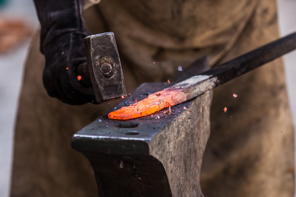

BlackSmithing Process
Forging the Steel
Forge the steel is the process to transfom a price of steel in a useful tool like a knive, a sword, a hammer, an axe and etc.
In this process we will need two important elements, heat and pressure. That's why we put the piece of steel in the fire until it reaches a temperature where it becomes malleable. Then we add pressure, hammering the steel into shape as desired.
Heat Treatment
To create a steel tool, we need to do all the heat treatment required by the steel.
First we do normalization, which is the process of heating the steel to a temperature where it turns yellow, and then letting it cool to room temperature. This process helps the steel become more malleable and easier to shape. After normalizing the steel and modeling it as we wish, we need to do the tempering process, in this process we heat the modeled steel until it reaches an orange color and we cool it quickly in oil. This will give hardness and strength to the material. Finally, after tempering the steel will be hard and resistant, but it will be brittle, to correct this we must temper. In this process we put the steel in an oven at 200 degrees celcius for 3 hours. This will ensure that the steel does not break.